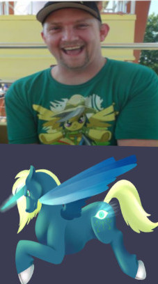
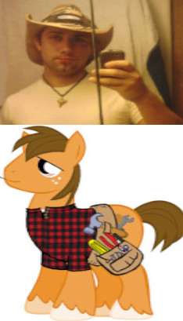
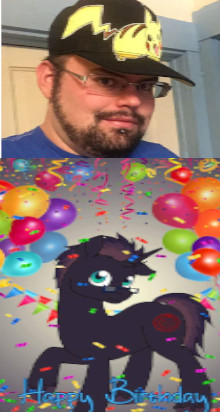

| Steven Kugelman(Psych Swiftwing)  | Chris Thompson(Handy Hooves) | Amanda Bowman(Place Holder) | Randy Davis(Silent Overture) | Katie Sander/ | Aaron Erlandson/ |
Indyquestria is a group of like-minded people who all like or even love the show MLP or My Little Pony!
This group is very open minded and have a lot of very friendly people in it.
Why are people drawn to this?
Many people are drawn to the show MLP for many reasons. Such reasons can include they just love the show, they love the artwork, the story or even the fandom. There are great fan projects such as Fallout Equestria
, Ponyfinder
, MLP fan games and even awesome merchandise both made by the company and by fans.
What could I gain from joining this group? By joining this group you could make a lot of good friends who can stay with you for the rest of your life. Most bronies are very happy to have more friends and have such a wide range of different interests.